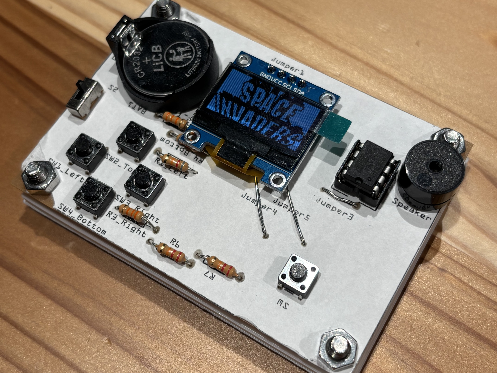

「電子工作！自作ゲーム機講座」を開催します
本講座では、京都橘大学の「プログラミングパーク」イベントにて、電子工作の楽しさを体験いただけます。はんだごてを使用して電子部品を基板に実装する実践的な作業を通じて、自作ゲーム機「TinyJoyPad」を完成させます。
使用する基板は、クリエーションラボで独自に設計された特別なもの。シンプルながらもゲーム機としての機能をしっかりと備えた構造で、はんだ付け初心者から経験者まで幅広い方にお楽しみいただけます。
さらに、講座中には電子部品や回路の基礎についても詳しく解説し、電子工作に興味がある方が安心して取り組める内容を目指しています。完成したTinyJoyPadでは、簡単なゲームで遊ぶことができ、持ち帰って自分でプログラムを書き換える楽しみも待っています。
対象者:
京都橘大学 工学部情報工学科に在籍している学生
参加特典:
完成したTinyJoyPadをお持ち帰りいただけます。また、今後の電子工作やプログラミングに役立つアドバイスや資料もご提供します。
皆さまのご参加を心よりお待ちしております！
Github-Hmasa2005
DIY-GAMEHARD詳細資料 (PDF)
以下のPDFでさらに詳しい講座内容をご覧いただけます:PDFをダウンロード
※PDFが表示されない場合は、上記のリンクをクリックしてダウンロードしてください。